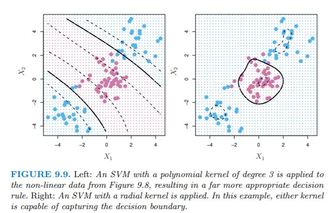

9: The Kernel Trick
Session 9: The Kernel Trick
Learning objectives:
- Implement a binary classification model using a maximal margin classifier.
- Implement a binary classification model using a support vector classifier.
- Implement a binary classification model using a support vector machine (SVM).
- Generalize SVM models to multi-class cases.
AUROC
- image source: Rachel Draelos
AUROC
The area under an ROC curve is a popular metric for classification methods.
- a user can change the cutoff value and move a decision boundary
- for each cutoff value, compute and record the FPR (false positive rate) and TPR (true positive rate)
- plot TPR vs FPR
- compute the area under the curve: values closer to 1.0 are deemed better models
DCP1
SVM Overview
Support vector machine (SVM), an approach for classification developed in 1990. SVM is a generalizaion of classifiers methods, in particular:
- maximal margin classifier (it requires that the classes be separable by a linear boundary).
- support vector classifier
- support vector machine: binary classification setting with two classes
(optional for this course)
# DiagrammR package
mermaid("
graph TB
A[SVM<br>support vector machine<br>non-linear class boundaries]
B[MMC<br>maximal margin classifier<br>linear class boundaries]
B-->C[SVC<br>support vector classifier<br>applied in a broader range of cases]
A-->C
")Hyperplane

- A hyperplane is a \(p-1\)-dimensional flat subspace of a \(p\)-dimensional space. For example, in a 2-dimensional space, a hyperplane is a flat one-dimensional space: a line.
- (standard form) Definition of 2D hyperplane in 3D space: \[\beta_{0} + \beta_{1}X_{1} + \beta_{2}X_{2} + \beta_{3}X_{3}= 0\]
- (inner products) Any \(X\) s.t. \(X = (X_{1}, X_{2})^T\) for which the equation above is satisfied is a point on the hyperplane.
Additional resource: Deep AI
Conceptual Task 1A
ISLR, Chapter 9, Conceptual Task 1A
“This problem involves hyperplanes in two dimensions.”
- Sketch the hyperplane \(1 + 3X_{1} - X_{2} = 0\). Indicate the set of points for which \(1 + 3X_{1} - X_{2} > 0\), as well as the set of points for which \(1 + 3X_{1} - X_{2} < 0\).
- blue: \(1 + 3X_{1} - X_{2} > 0\)
- red: \(1 + 3X_{1} - X_{2} < 0\)

Separating Hyperplane
- Consider a matrix X of dimensions \(n*p\), and a \(y_{i} \in \{-1, 1\}\). We have a new observation, \(x^*\), which is a vector \(x^* = (x^*_{1}...x^*_{p})^T\) which we wish to classify to one of two groups.
- We will use a separating hyperplane to classify the observation.
- We can label the blue observations as \(y_{i} = 1\) and the pink observations as \(y_{i} = -1\).
- Thus, a separating hyperplane has the property s.t. \(\beta_{0} + \beta_{1}X_{i1} + \beta_{2}X_{i2} ... + \beta_{p}X_{ip} > 0\) if \(y_{i} =1\) and \(\beta_{0} + \beta_{1}X_{i1} + \beta_{2}X_{i2} ... + \beta_{p}X_{ip} < 0\) if \(y_{i} = -1\).
- In other words, a separating hyperplane has the property s.t. \(y_{i}(\beta_{0} + \beta_{1}X_{i1} + \beta_{2}X_{i2} ... + \beta_{p}X_{ip}) > 0\) for all \(i = 1...n\).
- Consider also the magnitude of \(f(x^*)\). If it is far from zero, we are confident in its classification, whereas if it is close to 0, then \(x^*\) is located near the hyperplane, and we are less confident about its classification.
Conceptual Task 1B
ISLR, Chapter 9, Conceptual Task 1B
- On the same plot, sketch the hyperplane \(-2 + X_{1} + 2X_{2} = 0\). Indicate the set of points for which \(-2 + X_{1} + 2X_{2} > 0\), as well as the set of points for which \(-2 + X_{1} + 2X_{2} < 0\).
- blue: \(-2 + X_{1} + 2X_{2} > 0\)
- red: \(-2 + X_{1} + 2X_{2} < 0\)
Maximal Margin Classifier

- Generally, if data can be perfectly separated using a hyperplane, an infinite amount of such hyperplanes exist.
- An intuitive choice is the maximal margin hyperplane, which is the hyperplane that is farthest from the training data.
- We compute the perpendicular distance from each training observation to the hyperplane. The smallest of these distances is known as the margin.
- The maximal margin hyperplane is the hyperplane for which the margin is maximized. We can classify a test observation based on which side of the maximal margin hyperplane it lies on, and this is known as the maximal margin classifier.
- The maximal margin classifier classifies \(x^*\) based on the sign of \(f(x^*) = \beta_{0} + \beta_{1}x^*_{1} + ... + \beta_{p}x^*_{p}\).
- Note the 3 training observations that lie on the margin and are equidistant from the hyperplane. These are the support vectors (vectors in \(p\)-dimensional space; in this case \(p=2\)).
- They support the hyperplane because if their location was changed, the hyperplane would change.
- The maximal margin hyperplane depends on these observations, but not the others (unless the other observations were moved at or within the margin).
Conceptual Task 3
obs xvals yvals class_label
1 1 3 4 Red
2 2 2 2 Red
3 3 4 4 Red
4 4 1 4 Red
5 5 2 1 Blue
6 6 4 3 Blue
7 7 4 1 Blue- We are given \(n = 7\) observations in \(p = 2\) dimensions. For each observation, there is an associated class label.

- Sketch the optimal separating hyperplane, and provide the equation for this hyperplane

- blue: \(0.5 - X_{1} + X_{2} < 0\)
- red: \(0.5 - X_{1} + X_{2} > 0\)
- maximal margin in indicated by the dashed lines, with margin
\[M = \frac{0.5}{\sqrt{2}} \approx 0.3536\]
- Indicate the support vectors for the maximal margin classifier.
Argue that a slight movement of the seventh observation would not affect the maximal margin hyperplane.
Sketch a hyperplane that is not the optimal separating hyperplane, and provide the equation for this hyperplane.

- Draw an additional observation on the plot so that the two classes are no longer separable by a hyperplane.

Mathematics of the MMC
- Consider constructing an MMC based on the training observations \(x_{1}...x_{n} \in \mathbb{R}^p\). This is the solution to the optimization problem:
\[\text{max}_{\beta_{0}...\beta_{p}, M} \space M\] \[\text{subject to } \sum_{j=1}^{p}\beta_{j}^2 = 1\] \[y_{i}(\beta_{0} + \beta_{1}X_{i1} + \beta_{2}X_{i2} ... + \beta_{p}X_{ip}) \geq M \quad \forall i = 1...n\]
- \(M\) is the margin, and the \(\beta\) coeffients are chosen to maximize \(M\).
- The constraint (3rd equation) ensures that each observation will be correctly classified, as long as M is positive.
- The 2nd and 3rd equations ensure that each data point is on the correct side of the hyperplane and at least M-distance away from the hyperplane.
- The perpendicular distance to the hyperplane is given by \(y_{i}(\beta_{0} + \beta_{1}x_{i1} + \beta_{2}x_{i2} ... + \beta_{p}x_{ip})\).
But what if our data is not separable by a linear hyperplane?

Individual data points greatly affect formation of the maximal margin classifier

DCP2
Support Vector Classifiers
- We can’t always use a hyperplane to separate two classes.
- Even if such a classifier does exist, it’s not always desirable, due to overfitting or too much sensitivity to individual observations.
- Thus, it might be worthwhile to consider a classifier/hyperplane that misclassifies a few observations in order to improve classification of the remaining data points.
- The support vector classifier, a.k.a the soft margin classifier, allows some training data to be on the wrong side of the margin or even the hyperplane.
Mathematics of the SVC
- The SVC classifies a test observation based on which side of the hyperplane it lies.
\[\text{max}_{\beta_{0}...\beta_{p}, \epsilon_{1}...\epsilon_{n}, M} \space M\] \[\text{subject to } \sum_{j=1}^{p}\beta_{j}^2 = 1\] \[y_{i}(\beta_{0} + \beta_{1}X_{i1} + \beta_{2}X_{i2} ... + \beta_{p}X_{ip}) \geq M(1 - \epsilon_{i})\] \[\epsilon_{i} \geq 0, \quad \sum_{i=1}^{n}\epsilon_{i} \leq C\]
\(C\) is a nonnegative tuning parameter, typically chosen through cross-validation, and can be thought of as the budget for margin violation by the observations.
The \(\epsilon_{i}\) are slack variables that allow individual observations to be on the wrong side of the margin or hyperplane. The \(\epsilon_{i}\) indicates where the \(i^{\text{th}}\) observation is located with regards to the margin and hyperplane.
- If \(\epsilon_{i} = 0\), the observation is on the correct side of the margin.
- If \(\epsilon_{i} > 0\), the observation is on the wrong side of margin
- If \(\epsilon_{i} > 1\), the observation is on the wrong side of the hyperplane.
Since \(C\) constrains the sum of the \(\epsilon_{i}\), it determines the number and magnitude of violations to the margin. If \(C=0\), there is no margin for violation, thus all the \(\epsilon_{1},...,\epsilon_{n} = 0\).
Note that if \(C>0\), no more than \(C\) observations can be on wrong side of hyperplane, since in these cases \(\epsilon_{i} > 1\).
Tuning Parameter

A property of the classifier is that only data points which lie on or violate the margin will affect the hyperplane. These data points are known as support vectors.
\(C\) controls the bias-variance tradeoff of the classifier.
- When \(C\) is large: high bias, low variance
- When \(C\) is small: low bias, high variance
The property of the SVC solely being dependent on certain observations in classification differs from other classification methods such as LDA (depends on mean of all observations in each class, as well as each class’s covariance matrix using all observations).
However, logistic regression is more similar to SVC in that it has low sensitivity to observations far from the decision boundary.
Nonlinear Classification
- Many decision boundaries are not linear.
- We could fit an SVC to the data using \(2p\) features (in the case of \(p\) features and using a quadratic form).
\[X_{1}, X_{1}^{2}, \quad X_{2}, X_{2}^{2}, \quad\cdots, \quad X_{p}, X_{p}^{2}\]
\[\text{max}_{\beta_{0},\beta_{11},\beta_{12},\dots,\beta_{p1},\beta_{p2} \epsilon_{1},\dots,\epsilon_{n}, M} \space M\] \[\text{subject to } y_{i}\left(\beta_{0} + \sum_{j=1}^{p} \beta_{ji}x_{ji} + \sum_{j=1}^{p} \beta_{ji}x_{ji}^{2}\right) \geq M(1 - \epsilon_{i})\]
\[\epsilon_{i} \geq 0, \quad \sum_{i=1}^{n}\epsilon_{i} \leq C, \quad \sum_{j=1}^{p}\sum_{k=1}^{2} \beta_{jk}^{2} = 1\]
- Note that in the enlarged feature space (here, with the quadratic terms), the decision boundary is linear. But in the original feature space, it is quadratic \(q(x) = 0\) (in this example), and generally the solutions are not linear.
- One could also include interaction terms, higher degree polynomials, etc., and thus the feature space could enlarge quickly and entail unmanageable computations.
Cortes (1995)
The soft margin classifier is credit to Kristin Bennett, Vladimir Vapnik, and Corinna Cortes.
Conceptual Task 2
We now investigate a non-linear decision boundary.
- blue: \((1 + X_{1})^{2} + (2 - X_{2})^{2} > 4\)
- red: \((1 + X_{1})^{2} + (2 - X_{2})^{2} < 4\)
- To what class is the observation (0, 0) classified? (−1, 1)? (2, 2)? (3, 8)?
ifelse(euclidean_distance(0, 0, -1, 2) > 4, "blue", "red")[1] "red"ifelse(euclidean_distance(-1, 1, -1, 2) > 4, "blue", "red")[1] "red"ifelse(euclidean_distance(2, 2, -1, 2) > 4, "blue", "red")[1] "red"ifelse(euclidean_distance(3, 8, -1, 2) > 4, "blue", "red")[1] "blue"- While the decision boundary
\[(1 + X_{1})^{2} + (2 - X_{2})^{2} = 4\]
is not linear in \(X_{1}\) and \(X_{2}\), it is linear in terms of \(X_{1}\), \(X_{1}^{2}\), \(X_{2}\), \(X_{2}^{2}\)
\[\beta_{0} + \beta_{1}X_{1} + \beta_{2}X_{2} + \beta_{3}X_{1}^{2} + \beta_{4}X_{2}^{2} = 0\]
with \(\beta_{0} = 1\), \(\beta_{1} = 2\), \(\beta_{2} = -4\), \(\beta_{3} = 1\), and \(\beta_{4} = 1\).
The Kernel Trick
As presented in Why Machines Learn by Anil Ananthaswamy (pages 224 to 241),
The Kernel Trick
If we can find a mapping
\[x_{j} \rightarrow \phi(x_{j})\]
where \(x_{j} \in \mathbb{R}^{d}\) is in a lower-dimensional space and \(\phi(x_{j}) \in \mathbb{R}^{n}\) is in a higher-dimensional space (i.e. \(d < n\)) and
\[K(x_{i}, x_{j}) = \phi(x_{i}) \cdot \phi(x_{j})\]
then the kernel function allows us to compute inner products in the lower-dimensional space rather than the higher dimensional space.
Example 1:
\[a = \left[\begin{array}{c}a_{1} \\ a_{2}\end{array}\right], b = \left[\begin{array}{c}b_{1} \\ b_{2}\end{array}\right], \quad K(x,y) = (x \cdot y)^{2}, \quad \phi(x) = \left[\begin{array}{c}x_{1}^{2} \\ x_{2}^{2} \\ \sqrt{2}x_{1}x_{2}\end{array}\right]\]
3D
\[\begin{array}{rcl} \phi(a) \cdot \phi(b) & = & \left[\begin{array}{c}a_{1}^{2} \\ a_{2}^{2} \\ \sqrt{2}a_{1}a_{2}\end{array}\right] \cdot \left[\begin{array}{c}b_{1}^{2} \\ b_{2}^{2} \\ \sqrt{2}b_{1}b_{2}\end{array}\right] \\ & = & a_{1}^{2}b_{1}^{2} + a_{2}^{2}b_{2}^{2} + 2a_{1}a_{2}b_{1}b_{2} \\ \end{array}\]
2D
\[\begin{array}{rcl} K(a,b) & = & (a \cdot b)^{2} \\ ~ & = & \left(\left[\begin{array}{c}a_{1} \\ a_{2}\end{array}\right] \cdot \left[\begin{array}{c}b_{1} \\ b_{2}\end{array}\right]\right)^{2} \\ ~ & = & (a_{1}b_{1} + a_{2}b_{2})^{2} \\ ~ & = & a_{1}^{2}b_{1}^{2} + a_{2}^{2}b_{2}^{2} + 2a_{1}a_{2}b_{1}b_{2} \\ \end{array}\]
Example 2:
- image source: Grace Zhang
Guyon (1980s)
The kernel trick, its development for SVMs, and synthesis is credited to Isabelle Guyon (Bell Labs)
Support Vector Machines
- The SVM is an extension of the SVC which results from using kernels to enlarge the feature space. A kernel is a function that quantifies the similarity of two data points.
- Essentially, we want to enlarge the feature space to make use of a nonlinear decision boundary, while avoiding getting bogged down in unmanageable calculations.
- The solution to the SVC problem in the SVM context involves only the inner products (AKA dot products) of the observations.
\[\langle x_{i} \; , x_{i'} \; \rangle = \sum_{j=1}^{p}x_{ij}x_{i'j}\]
In the context of SVM, the linear support vector classifier is as follows:
\[f(x) = \beta_{0} + \sum_{i=1}^{n}\alpha_{i}\langle \; x, x_i\; \rangle\]
- To estimate the \(n\) \(\alpha_{i}\) coefficients and \(\beta_{0}\), we only need the \(\binom{n}{2}\) inner products between all pairs of training observations.
- Note that in the equation above, in order to compute \(f(x)\) for the new point \(x\), we need the inner product between the new point and all the training observations. However, \(\alpha_{i} = 0\) for all points that are not on or within the margin (i.e., points that are not support vectors). So we can rewrite the equation as follows, where \(S\) is the set of support point indices:
\[f(x) = \beta_{0} + \sum_{i \in S}\alpha_{i}\langle \; x, x_{i} \; \rangle\]
- Replace every inner product with \(K(x_{i}, x_{i'})\), where \(K\) is a kernel function.
- \(K(x_{i}, x_{i'}) = \sum_{j=1}^{p}x_{ij}x_{i'j}\) is the SVC and is known as a linear kernel since it is linear in the features.
- One could also have kernel functions of the following form, where \(d\) is a positive integer:
\[K(x_{i}, x_{i'}) = \left(1 + \sum_{j=1}^{p}x_{ij}x_{i'j}\right)^d\]
- This will lead to a much more flexible decision boundary, and is basically fitting an SVC in a higher-dimensional space involving polynomials of degree \(d\), instead of the original feature space.
Poggio (1975)
The polynomial kernels for SVMs are credited to Tomaso Poggio (MIT computational neuroscientist)
- When an SVC is combined with a nonlinear kernel as above, the result is a support vector machine.
\[f(x) = \beta_{0} + \sum_{i \in S}\alpha_{i}K(x, x_{i})\]
Radial Kernels
- There are other options besides polynomial kernel functions, and a popular one is a radial kernel.
\[K(x, x_{i}) = \text{exp}\left(-\gamma\sum_{j=1}^p(x_{ij} - x_{i'j})^2\right), \quad \gamma > 0\]
- For a given test observations \(x^*\), if it is far from \(x_{i}\), then \(K(x^*, x_{i})\) will be small given the negative \(\gamma\) and large \(\sum_{j=1}^p(x^*_{j} - x_{ij})^2)\).
- Thus, \(x_{i}\) will play little role in \(f(x^*)\).
- The predicted class for \(x^*\) is based on the sign of \(f(x^*)\), so training observations far from a given test point play little part in determining the label for a test observation.
- The radial kernel therefore exhibits local behavior with respect to other observations.
SVM with Radial Kernels

- The advantage of using a kernel rather than simply enlarging feature space is computational, since it is only necessary to compute \(\binom{n}{2}\) kernel functions.
- For radial kernels, the feature space is implicit and infinite dimensional, so we could not do the computations in such a space anyways.
DCP3
More than Two Classes
- The concept of separating hyperplanes does not extend naturally to more than two classes, but there are some ways around this.
- A one-versus-one approach constructs \(K \choose 2\) SVMs, where \(K\) is the number of classes. An observation is classified to each of the \(K \choose 2\) classes, and the number of times it appears in each class is counted.
- The \(k^\text{th}\) class might be coded as +1 versus the \((k')^\text{th}\) class is coded as -1.
- The data point is classified to the class for which it was most often assigned in the pairwise classifications.
- Another option is one-versus-all classification. This can be useful when there are a lot of classes.
- \(K\) SVMs are fitted, and one of the K classes to the remaining \(K-1\) classes.
- \(\beta_{0k}...\beta_{pk}\) denotes the parameters that results from constructing an SVM comparing the \(k\)th class (coded as +1) to the other classes (-1).
- Assign test observation \(x^*\) to the class \(k\) for which \(\beta_{0k} + ... + \beta_{pk}x^*_{p}\) is largest.
SVM Legacy
“The BBVA Foundation has awarded Isabelle Guyon, Bernhard Schölkopf and Vladimir Vapnik with the Frontiers of Knowledge Award in the Information and Communication Technologies category, for helping advance the field of artificial intelligence with their seminal contributions to machine learning.”
Schölkopf coined the phrase “support vector machines” to distance the idea away from neural networks
- neural networks were distant in the “AI Winter” (little research gains) from 1981 to 2012
- “machine learning” becomes very popular
Quo Vadimus?
due this Friday:
- Precept 5
- CuriosityMid (survey)
Footnotes
(optional) Additional Resources
- SVM in Python by Carolina Bento
Session Info
sessionInfo()R version 4.5.1 (2025-06-13 ucrt)
Platform: x86_64-w64-mingw32/x64
Running under: Windows 10 x64 (build 19045)
Matrix products: default
LAPACK version 3.12.1
locale:
[1] LC_COLLATE=English_United States.utf8
[2] LC_CTYPE=English_United States.utf8
[3] LC_MONETARY=English_United States.utf8
[4] LC_NUMERIC=C
[5] LC_TIME=English_United States.utf8
time zone: America/New_York
tzcode source: internal
attached base packages:
[1] stats graphics grDevices utils datasets methods base
other attached packages:
[1] lubridate_1.9.4 forcats_1.0.0 stringr_1.5.1 dplyr_1.1.4
[5] purrr_1.1.0 readr_2.1.5 tidyr_1.3.1 tibble_3.3.0
[9] ggplot2_4.0.0 tidyverse_2.0.0 DiagrammeR_1.0.11
loaded via a namespace (and not attached):
[1] gtable_0.3.6 jsonlite_2.0.0 compiler_4.5.1 tidyselect_1.2.1
[5] scales_1.4.0 yaml_2.3.10 fastmap_1.2.0 R6_2.6.1
[9] labeling_0.4.3 generics_0.1.4 knitr_1.50 htmlwidgets_1.6.4
[13] visNetwork_2.1.4 pillar_1.11.0 RColorBrewer_1.1-3 tzdb_0.5.0
[17] rlang_1.1.6 stringi_1.8.7 xfun_0.52 S7_0.2.0
[21] timechange_0.3.0 cli_3.6.5 withr_3.0.2 magrittr_2.0.3
[25] digest_0.6.37 grid_4.5.1 rstudioapi_0.17.1 hms_1.1.3
[29] lifecycle_1.0.4 vctrs_0.6.5 evaluate_1.0.4 glue_1.8.0
[33] farver_2.1.2 rmarkdown_2.29 tools_4.5.1 pkgconfig_2.0.3
[37] htmltools_0.5.8.1